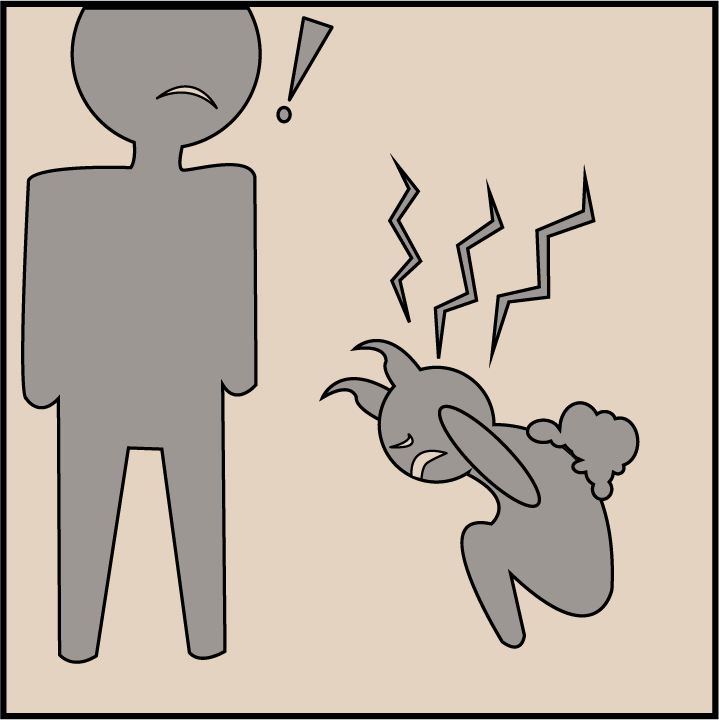

Første patient:
Lisa er blevet bragt ind af sine forældre, fordi hun er blevet ramt af krops forvrængninger.
Tag Lisas sagHar du, hvad der skal til for at kurerer dem?
Lisa er blevet bragt ind af sine forældre, fordi hun er blevet ramt af krops forvrængninger.
Tag Lisas sag
MONSTER INFASTION! Lokal læge med interesse for det okkulte er byens redning.
Børn overalt i byen er begyndt at blive inficeret af monstrøse væsner. Det er som om at disse forskellige monstre besætter vores børn, og er skyld i, at vores børn oplever rædselsfulde kropsforvrængninger!
Små monstre! Flere forældre og værger til små børn har over de seneste par måneder indberettet til sundhedsvæsnet, at deres børn lider under forfærdetlige symptomer, som resulterer i, at børnene udvikler groteske fysiske kropsforvrængninger. Disse fysiske forvrængninger bliver ofte efterfulgt af alvorlige psykiske problemer for børnene. Nogle forældre og værger har informeret sundhedsvæsnet om, at deres børn på forhånd har været psykisk skrøbelige. I disse tilfælde har børnene måske allerede haft nogle psykiske diagnoser, inden inficeringen af monstrene.
I størstedelen af tilfældene, hvor børn bliver inficerede af forskellige typer af monstre, mener forældre og værger dog, at deres børn ikke har været mentalt skrøbelige forinden inficeringen fandt sted. Ny type speciallæge. Kort efter de første tilfælde blev indberettet, trådte en lokal læge frem med sin viden om det okkulte. Lægen har været i stand til at identificere mange af de monstre, der inficerede byens børn, og har lige siden epidemien arbejdet hårdt på at finde ud af, hvordan de forskellige forvrængninger skal kureres.
Her kan du læse lidt om, hvad dette spil går ud på.
Her kan du gå ind og justere spillets indstillinger.